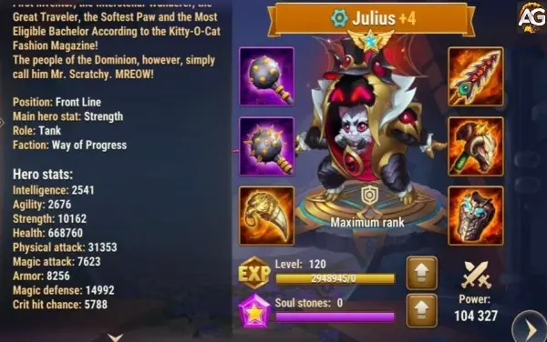

Guia do Julius Hero Wars Mobile
- Por: Alexandre Domingos. .
| Atributos Principais | Detalhes |
|---|---|
| Posição: | Linha da Frente |
| Função: | Tanque |
| Estatísticas principal: | Força |
| Facção: | Progresso |
| Como conseguir: | Eventos, baú heroico |
| Tier List 2024 | Ranque |
|---|---|
| Tier List de Herói: | S+ |
| Tier List de Hidra: | A+ |
Habilidades de Julius: Fortaleza e Proteção
Meowsterpiece de Defesa:
Esta habilidade lança um escudo na frente da equipe de Julius, absorvendo todo o dano. Quando o escudo é destruído, todos os heróis da equipe são curados. Esta habilidade é especialmente útil para enfrentar ataques poderosos dos adversários e manter sua equipe saudável.
Dispositivo Imitador:
Essa habilidade passiva aumenta o ataque físico de Julius sempre que ele ganha um escudo. Além disso, ele pode lançar um escudo sobre si mesmo, que se não for destruído em 5 segundos, é copiado para cada aliado. Isso garante uma proteção adicional para toda a equipe, tornando Julius ainda mais formidável em combate prolongado.
Motor de Nove Vidas:
Sempre que um escudo é destruído em Julius ou em um aliado, eles ganham bônus de armadura e defesa mágica, enquanto todos os debuffs são removidos. Essa habilidade é crucial para manter a equipe resistente aos ataques inimigos e garantir sua sobrevivência durante as batalhas mais intensas.
Reflexos Perfeitos:
Esta habilidade aumenta passivamente a velocidade de ataques e habilidades para todos os aliados protegidos por um escudo. O bônus é ainda maior para os heróis do Progresso, o que aumenta significativamente a eficácia da equipe de Julius em combate.
Estratégias de Jogo com Julius:
Proteção Total:
A principal função de Julius é proteger sua equipe, então posicione-o na linha de frente para absorver o máximo de dano possível com seu escudo. Isso permite que seus aliados de dano, como Astrid, Ginger, Keira e Ártemis, ataquem com segurança por trás.
Sinergia de Habilidades:
Julius tem uma sinergia especial com heróis que possuem habilidades de escudo. Heróis como Astaroth, Jorgen e Rufus complementam perfeitamente as habilidades defensivas de Julius, criando uma linha de defesa quase impenetrável.
Estratégias de Tempo:
A habilidade de Julius de lançar escudos em seus aliados pode ser crucial em momentos críticos da batalha. Use-a estrategicamente para proteger sua equipe contra ataques inimigos poderosos ou para reforçar sua defesa durante um empate.
Ataques Poderosos em Combinação:
A habilidade de aumentar o ataque físico sempre que Julius ganha um escudo torna-o ainda mais eficaz quando combinado com outros heróis que causam grandes danos. Use-o em conjunto com Astrid, Ginger, Keira ou Danada para maximizar o potencial de ataque da equipe.
Sinergia de Habilidades: Maximizando a Proteção
Julius é um mestre em proteção, sendo capaz de defender todo o time de qualquer tipo de dano com seu escudo. Além disso, ele se destaca quando combinado com heróis que possuem habilidades de escudo. Confira abaixo a lista dos heróis que têm melhor sinergia com Julius, organizados em ordem alfabética:
| Nº | Habilidade do Herói |
|---|---|
| 1 | A terceira habilidade de Aidan |
| 2 | A primeira habilidade de Astaroth |
| 3 | A quarta habilidade de Andvari |
| 4 | A segunda habilidade do Fafnir |
| 5 | A primeira habilidade de Isaac |
| 6 | A terceira habilidade de Isaac |
| 7 | A segunda habilidade do Juiz |
| 8 | A segunda habilidade de Jorgen |
| 9 | A primeira habilidade de Markus |
| 10 | A primeira habilidade de Maya |
| 11 | A primeira habilidade de Rufus |
| 12 | A primeira habilidade de Sebastian |
| 13 | A segunda habilidade de Peppy |
Lembre-se que em Hero Wars, a primeira habilidade de cada herói é o seu ultimate!
Análise do Talismã de Julius em Hero Wars Alliance
Visão Geral
Equipar Julius com um talismã em Hero Wars Alliance aumenta significativamente suas capacidades em batalha. O talismã proporciona um aumento substancial na força, ataque físico e sobrevivência geral de Julius, além de atributos críticos de perfuração de armadura.
Análise Detalhada
Aumento de Força:
- Aumento de Força: +2000 pontos
- Efeito por Ponto de Força:
- 1 Força = 1 Ataque Físico
- 1 Força = 40 Pontos de Vida
- Efeitos Totais:
- Aumento de Ataque Físico: +2000 pontos
- Aumento de Vida: +80.000 pontos
Com o talismã, Julius ganha um total de 2000 pontos de força. Isso não só aumenta seu ataque físico em 2000 pontos, mas também melhora sua vida em 80.000 pontos. Esse aumento substancial na vida melhora a sobrevivência de Julius nas batalhas, permitindo que ele suporte mais dano.
Poder de Batalha Aprimorado:
- A força aumentada se traduz diretamente em mais poder de ataque físico, fortalecendo as capacidades ofensivas de Julius.
- A vida adicional fornece um maior buffer contra danos recebidos, tornando Julius mais resistente e difícil de derrotar.
Slots de Perfuração de Armadura:
- Aumento de Perfuração de Armadura por Slot: +6600 pontos
- Aumento Total de Perfuração de Armadura: +19.800 pontos (em 3 slots)
O talismã também concede a Julius três slots para perfuração de armadura, cada um contribuindo com 6600 pontos adicionais. Esse aumento significativo na perfuração de armadura permite que Julius ultrapasse efetivamente as defesas inimigas, tornando seus ataques mais letais contra oponentes fortemente armados.
Resumo dos Atributos do Talismã de Julius:
| Slot | Estatísticas | Pontos Máximos |
|---|---|---|
| 0 | Força | +2000 |
| 1 | Perfuração de Armadura | +6600 |
| 2 | Perfuração de Armadura | +6600 |
| 3 | Perfuração de Armadura | +6600 |
Impacto Geral do Talismã do Julius
Equipar Julius com o talismã melhora dramaticamente sua eficácia em combate. O aumento de 2000 pontos na força se traduz em ganhos significativos tanto no ataque físico quanto na vida, melhorando suas capacidades ofensivas e defensivas. Além disso, os três slots de perfuração de armadura, cada um fornecendo 6600 pontos, garantem que Julius possa combater efetivamente inimigos com armadura, tornando-o uma força formidável no campo de batalha.
Julius: Pontos Fortes e Fracos
Pontos Fortes
| Pontos Fortes |
|---|
| Exibe notável resistência a diversos tipos de dano, tornando-se uma escolha confiável em batalhas prolongadas. |
| Concede escudos protetores que absorvem danos de todas as fontes, proporcionando uma defesa adicional à equipe. |
| Tem a habilidade de curar aliados, proporcionando suporte valioso durante batalhas intensas. |
| Destaca-se ao curar aliados do Progresso, dobrando o efeito de cura e fortalecendo ainda mais a equipe. |
Pontos Fracos
| Pontos Fracos |
|---|
| Apresenta uma baixa classificação de armadura, tornando-o vulnerável a ataques físicos. |
| Sua eficácia depende da ativação dos escudos para alcançar níveis de resistência comparáveis aos de tanques. |
Prioridades de Evolução de Julius
Glifos
Nos Glifos de Julius priorize vida e força para ele ter mais sobrevivência, e armadura para reduzir danos de ataque básico na linha de frente. Depois, ataque físico para aumentar os bônus das habilidades e por último chance de dano crítico.
| Prioridades | Glifos |
|---|---|
| 1ª | Vida |
| 2ª | Força |
| 3ª | Armadura |
| 4ª | Ataque Físico |
| 5ª | Chance de crítico |
Artefatos
Nos artefatos do Julius priorize o anel para ganhar mais vida e ataque físico, depois o livro para ganhar mais ataque físico e chance de dano crítico, e por último, a arma para ativar chance de dano crítico para todos os aliados.
| Prioridades | Artefatos |
|---|---|
| 1ª | Anel |
| 2ª | Livro |
| 3ª | Arma (Chance de crítico) |
Visuais
Nos visuais de Julius suba de nível primeiro a Super Skin para ganhar mais vida e ter mais sobrevivência, em segundo suba o visual de força para ganhar mais vida e também ataque físico para aumentar os bônus das habilidades. Depois suba de nível defesa mágica para ter mais resistência contra times mágicos.
| Prioridades | Visuais |
|---|---|
| 1ª | Vida Super Skin |
| 2ª | Força |
| 3ª | Defesa Mágica | 4ª | Chance de Acerto Crítico |

Julius com Super Skin, Hero Wars Mobile.
Julius vs Hidras
Julius é um herói eficaz contra as Hidras e pode desempenhar um papel crucial na derrota dessas poderosas criaturas. Sua capacidade de proteger sua equipe com seu escudo, absorvendo todo tipo de dano, faz dele um tanque valioso em batalhas contra as Hidras.
Estratégias com Julius contra Hidras:
- Proteção Total: Posicione Julius na linha de frente para absorver os ataques das Hidras com seu escudo, protegendo assim o restante da equipe.
- Ataques Coordenados: Combine os ataques de Julius com habilidades de dano de outros heróis, como Fafnir, Morrigan e Keira, para causar o máximo de dano possível às Hidras.
- Utilização Inteligente do Escudo: Use a habilidade de escudo de Julius de forma estratégica, protegendo sua equipe nos momentos mais críticos da batalha.
- Resistência e Sobrevivência: Aumente a resistência de Julius com equipamentos e artefatos adequados, garantindo sua sobrevivência durante todo o combate contra as Hidras.
Equipe de Julius para Enfrentar Hidras:
Monte uma equipe equilibrada e estratégica para maximizar as chances de sucesso contra as Hidras. Aqui está uma sugestão de equipe:
- Fafnir: Contribui com dano e utilidade com suas habilidades de suporte.
- Morrigan: Oferece dano perfuração de armadura, defesa e cura para a equipe.
- Keira: Fornece um forte dano de área para ajudar a eliminar rapidamente as Hidras.
- Julius: O tanque principal da equipe, protege os aliados com seu escudo e mantém a linha de frente segura.
- Corvus: Apoia a equipe com suas habilidades de cura e utilidade, mantendo-os saudáveis durante a batalha.
Com a estratégia certa e uma equipe bem montada, Julius pode ser um herói excepcional na luta contra as Hidras, garantindo a vitória para sua equipe.
Julius em Batalhas
Forte Contra
- Sebastian - Keira - Satori - Krista e Lars - Cornelius - Danada - K'arkh
Counters
- Astrid e Lucas - Mojo - Alvanor - Orion - Jorgen - Artemis
Guia das Melhores Equipes com Julius
Após a mudança significativa na segunda habilidade de Julius, que agora concede um aumento de 330% no ataque físico, ele se tornou um herói ainda mais formidável. Combiná-lo com certos aliados pode aprimorar ainda mais suas habilidades, tornando-o um ativo crucial em suas composições de equipe. Aqui estão algumas dos melhores times com Julius:
- Astrid e Lucas, Ginger, Isaac, Nebula, Julius
O aumento de Nebula na habilidade de equilíbrio se combina bem com o escudo aprimorado de Julius, proporcionando uma proteção formidável para sua equipe. - Astrid e Lucas, Isaac, Amira, Nebula, Julius
As habilidades de suporte de Amira combinadas com o aumento de Nebula e a robustez de Julius criam uma equipe bem equilibrada. - Astrid e Lucas, Isaac, Sebastian, Juiz, Julius
As habilidades de controle de multidão de Sebastian e Judge complementam a presença de Julius na linha de frente, permitindo uma pressão sustentada sobre o inimigo. - Ginger, Isaac, Sebastian, Judge, Julius
Esta equipe foca em alto dano com Ginger e Isaac, enquanto Julius e Judge fornecem proteção e controle. - Fafnir, Artemis, Tristan, Julius, Machadinha
As habilidades disruptivas de Machadinha, combinadas com a robustez de Julius, criam uma linha de frente capaz de interromper efetivamente as formações inimigas. - Astrid e Lucas, Isaac, Nebula, Juiz, Julius
O aumento de Nebula combinado com o controle de multidão de Judge e a robustez de Julius tornam esta equipe resiliente e versátil. - Astrid e Lucas, Isaac, Jorgen, Juiz, Julius
A manipulação de energia de Jorgen combinada com o controle de Judge e a robustez de Julius criam oportunidades para pressão sustentada e interrupção. - Jet, Ginger, Isaac, Sebastian, Julius
A chance de acerto crítico de Jet combinada com a produção de dano de Ginger e Isaac, suportada pela presença de Julius na linha de frente, cria uma equipe mortal. - Fafnir, Artemis, Tristan, Julius, Chabba
O ganho de resistência de Chabba ao ganhar armadura enquanto restaura sua própria saúde, mais o escudo de Julius formam uma linha de frente poderosa. - Fafnir, Artemis, Tristan, Julius, Astaroth
A robustez de Astaroth combinada com a presença de Julius na linha de frente cria uma equipe durável capaz de absorver danos significativos. - Ginger, Isaac, Jorgen, Juiz, Julius
A manipulação de energia de Jorgen combinada com o controle de Judge e a robustez de Julius criam oportunidades para pressão sustentada e interrupção. - Fafnir, SemRosto, Juiz, K'arkh, Julius
Faceless e K'arkh fornecem alto dano, enquanto Julius e Judge oferecem proteção e controle. - Fafnir, Juiz, Keira, Julius, Astaroth
O dano de Keira, combinado com o suporte de Fafnir e a robustez de Astaroth, cria uma equipe equilibrada capaz de lidar com várias ameaças.
Essas composições de equipe aproveitam os pontos fortes de Julius e se combinam com suas habilidades para criar estratégias poderosas e eficazes para o sucesso na batalha. Experimente essas combinações para encontrar aquela que melhor se adapta ao seu estilo de jogo e aos desafios que você enfrenta.
Conclusão: Maximizando o Potencial de Julius
Em resumo, Julius é um herói excepcional em Hero Wars Alliance, capaz de proteger sua equipe de forma eficaz e fortalecer suas habilidades defensivas. Ao entender suas habilidades e implementar estratégias inteligentes, você pode tirar o máximo proveito desse poderoso guardião e dominar o campo de batalha. Lembre-se sempre de considerar a sinergia com outros heróis e adaptar suas táticas conforme necessário para garantir a vitória em cada confronto.
Sugestões de Vídeo:
Explore novas habilidades com nossos heróis em destaque!
Quando a barra de fúria de Astrid está cheia, Lucas se transforma em um gato...
 Guia do Isaac Hero Wars Mobile
Guia do Isaac Hero Wars MobileDominando a Arena com Isaac: Um Guia Completo de Estratégias para...
Crie um poderoso combo de equipe de escudos combinando o Juiz com outros heróis que...
Deixe seu Comentário
Para participar da sessão de bate-papo do Guia do Julius no site Alexandre Games Blog, clique no botão abaixo: